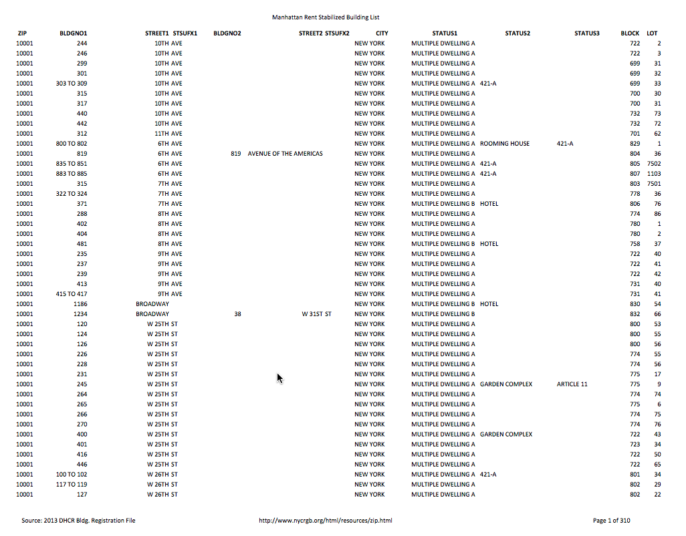

Am I Rent Stabilized?
Chris Henrick
background in geography, cartography, gis, --now work as a web developer. completed this project as part of my masters thesis for the Parsons MFA Design & Technology program
Concept:
A web app to encourage NYC tenants to find out if their landlord is
illegally over charging them for a rent-regulated apartment.
for a rent stabilized apartment
What I'll be covering:
- Rent Regulation in NYC
- Problems with enforcement
- FOIL'ing of Rent Stabilized data
- Demo of the app
- Evaluating its success
Background
New York Rent Laws:
- Rent Control
- Rent Stabilization
Limits how much a landlord can raise a tenant's rent each year; guarantees renewal lease; harsher penalties for landlord negligence; has its historical roots in the labor movement of the late 1800's / early 1900'sRent Stabilization affects ~50% of all apartments in NYC
Really the one thing keeping NYC affordable for millions of people. However...
Problem:
Landlords not telling their tenants they are rent-stabilized.
Problem:
No pro-active enforcement by government for non-compliance.
Burden of enforcement is placed on the tenant!
Enter Open Data
(well sort of open...)
List of NYC Buildings registered with the DHCR that contain Rent Stabilized units
A list of buildings registered with the DHCR containing rent-stabilized units. Again the process is voluntary.

BBL's!!!
Borough, Block, Lot number = a unique identifier. Problem was the data is trapped in a PDF.
FOIL request
Was able to obtain the data in a machine readable format
Map PLUTO
NYC Map PLUTO = tax lot data for the entire city
Registered VS. "likely non-registered"
Determine properties that have registered RS units; and those that may have un-registered units;
SQL query:
SELECT * FROM map_pluto2014v2
WHERE
yearbuilt < 1974
AND unitsres >= 6
AND bldgclass not ILIKE 'r%';
Anything that was built before 1974, has 6 or more units, and is not a coop or condo
Stats
- RS makes up ~50% of all apartments in NYC
- 47,150 registered properties
- 12,549 not registered that may have RS units
- ??? total RS units in NYC
- Avg RS rent???
complexity of data: ambiguous, lack of cooperation with DHCR (claiming its private)
Q:
How to make this data more useful?
A:
To use Open Data
as a prompt for Civic Action.
all the things:
- Postgres & PostGIS
- CartoDB.JS & SQL API
- Leaflet.JS
- NYC's Geoclient API
- Handlebars.JS
- GSAP (for "smooth scrolling")
Evaluation
Has it been successful?
App is being used by tenants rights and affordable housing advocacy groups.
Working with
ProPublica to improve upon & spread awareness of the app.
What I covered:
- Rent Regulation in NYC
- Problems with enforcement
- FOIL'ing of data
- Demo of the app
- Evaluating its success
Thank You
AmIRentStabilized.com
- twitter: @chrislhenrick
- github: github.com/clhenrick/am-i-rent-stabilized
fin